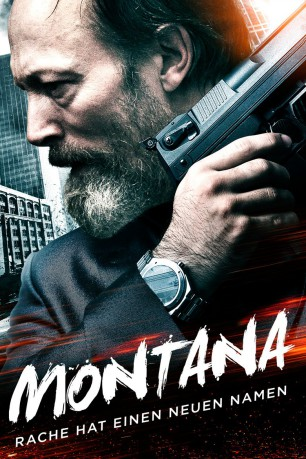
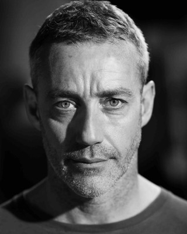

#4739 Montana - Rache hat einen neuen Namen
Alternativ: Montana
 
 IMDB-Wertung: 5.5 / 10
IMDB-Wertung: 5.5 / 10  Metascore: 0
Metascore: 0 
Die Straßen im Londoner East End sind ein hartes Pflaster: Mit brutaler Gewalt regiert die örtliche Drogen-Mafia den Problembezirk und scheut auch nicht davor zurück, Jugendliche aus dem Weg zu räumen. Dieses Schicksal droht nun dem vierzehnjährigen Montana, der mehr weiß als er sollte. Drogen-Baron Lazarus beauftragt seine Handlanger, den Jugendlichen zu ermorden. Montana erhält jedoch unerwartet Unterstützung von Dimitrije, einem früheren serbischen Auftragskiller, der noch eine offene Rechnung mit dem Untergrund-Boss zu begleichen hat. Er nimmt den jungen Montana unter seine Fittiche und bildet ihn in der Kunst des Kampfes aus. Außerdem lehrt Dimitrije seinem Schützling die Bedeutung von Freundschaft, Ehre und Respekt. Gemeinsam schließt das Duo einen Pakt und begibt sich auf die tödliche Mission, Lazarus in seine Schranken zu weisen
Jahr: 2014
Dauer: 108 Minuten
FSK: 18
Land: England Studio: WVG Medien GmbHTonspuren:
Untertitel: Deutsch,
Auflösung: 720p (1280x536) Größe: 2856 MB
Genre: Action, Krimi, Drama, Thriller
Regisseur: Mo Ali
Drehbuch: Josep Ciutat
Soundtrack:
Darsteller:
 Dominique Tipper als Mohawk
Dominique Tipper als Mohawk Lars Mikkelsen als Dimitrije
Lars Mikkelsen als Dimitrije Michelle Fairley als DCI Rachel Jones
Michelle Fairley als DCI Rachel Jones Duane Henry als Junior
Duane Henry als Junior Zlatko Buric als Slavko
Zlatko Buric als Slavko Ashley Walters als Ryan
Ashley Walters als Ryan Adam Deacon als Pitt
Adam Deacon als Pitt- Oliver Stark als Cal
- Richie Campbell als Isaac
- Alexandra Weaver als Danica
-  Rocky Marshall als DC Liam West
 Ryan Oliva als Branko
Ryan Oliva als Branko Lee Charles als Serbian Soilder
Lee Charles als Serbian Soilder- McKell David als Montana
 Clint Dyer als Kerrigan
Clint Dyer als Kerrigan- Brad Moore als Stephen Phelps
- Kedar Williams-Stirling als Lorenzo
- Eddie Bagayawa als The Chinaman
- Sarah Mac als Sophie
- Jordan Pitt als Dead Reece
- Tearry Konjanthed als Zugi Dancer
- Robert Eames als Gangster , uncredited
- Paul Blackwell als Armed response police officer
- Darrell D'Silva als Lazarus
- Dudley O'Shaughnessy als Slim
- Sinead Michael als Jess
- Shane Nolan als Undercover Police Officer
- Ruby Wild als Kelly
- Paul Knight als CO19 Officer
- Joshua Johnson als Young Teen
- Darren S. Cook als CO19 Officer
- Paul Mark Synnott als Dead Dutch Truck Driver , archive footage
- Kris Sommerville als CO19 / uniform supply
- Richard Herdman als Police Officer
- Chuen Tsou als Fat Mikey
- Stephen Modell als Skunk Smoking Lad
- Richard Cook als Dead guy in bed
- Sheeva Moshiri als PC Sheeva
- Yuliya Fytsaylo als Sleeping Girl
- Abdul Sharif als Mike
Datei: X:\FSK18-2014\Montana - Rache hat einen neuen Namen (2014, FSK18, 1280x536).mkv seit 10.11.2016
Festplatte: FSK18
 Es gibt insgesamt 27 Filme in der Gruppe 'FSK18-2014'
Es gibt insgesamt 27 Filme in der Gruppe 'FSK18-2014'